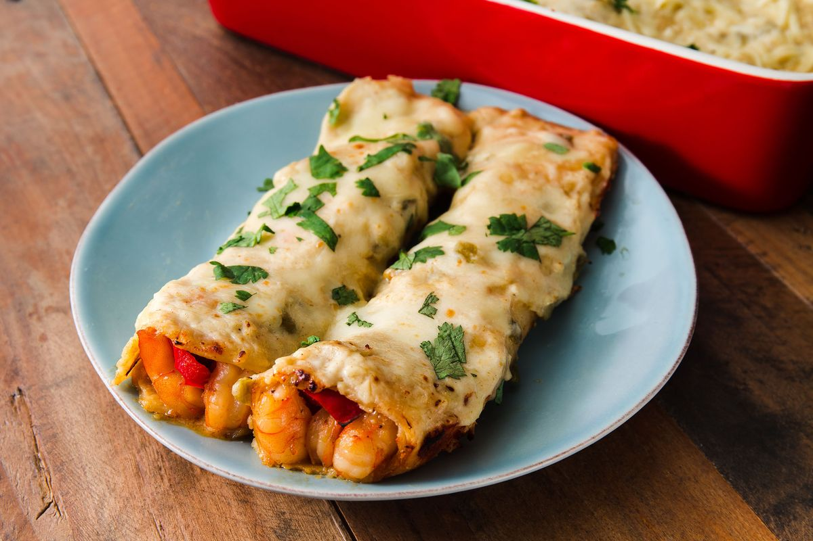

Shrimp Enchiladas

Shrimp enchiladas are a delectable Mexican dish that showcases succulent shrimp wrapped in soft corn tortillas, smothered in a rich and flavorful enchilada sauce, and topped with melted cheese. These enchiladas often include a medley of ingredients like onions, bell peppers, and cilantro, creating a delicious fusion of seafood and Mexican flavors in every bite.
Ingredients
Marination
- 32 extra-large raw shrimp (16 to 20 per pound), peeled and deveined
- 1/2 teaspoon salt, or more as needed
- 1 pinch cayenne pepper
- 2 tablespoons avocado oil, plus more as needed
- 1 cup diced poblano pepper or other green chili pepper
- 1 cup diced onion
- 2 tablespoons chili powder
- 2 teaspoons smoked paprika
- 1 teaspoon ground cumin
- 1/2 teaspoon freshly ground black pepper
- 1/4 teaspoon ground chipotle pepper
- 3 cloves garlic, minced
- 1/2 cup water
- 2 (15-ounce) cans lobster bisque soup
- 2 rounded tablespoons chopped cilantro
- 6 ounces Monterey Jack cheese, shredded
- 6 ounces Cheddar cheese, shredded
- 1 jalapeno, thinly sliced, or more to taste
- 2 radishes, thinly sliced, or more to taste
- 1/2 cup sour cream
- hot sauce
- 1 lime, cut into wedges for serving
Steps to cooking
- Preheat the oven to 450 degrees F (230 degrees C). Season shrimp with salt and cayenne in a bowl and toss with tongs to evenly coat.
- Add 1 tablespoon of avocado oil to a skillet, and set on medium-high heat. Place shrimp, without crowding, in a single layer in the skillet; sear for 30 to 60 seconds per side, then transfer to a bowl. You will have to work in batches. Place seared shrimp in the refrigerator.
- Add peppers, onions, and a large pinch of salt to the skillet. Reduce heat to medium, and cook, stirring up the brown bits from the bottom of the pan, until onions begin to turn translucent, 3 to 5 minutes.
- Season with chili powder, smoked paprika, cumin, black pepper, chipotle pepper, and garlic; sauté for 1 to 2 minutes more. Remove 8 rounded tablespoons of the mixture to a bowl and set aside.
- Pour water into the pan and stir to deglaze the bottom. Stir in lobster bisque, plus a few tablespoons of water used to rinse the cans. Add tomato paste and raise heat to medium-high; stir until well combined. Bring sauce to a simmer, reduce heat to medium, and simmer for 5 to 10 minutes, stirring occasionally.
- Meanwhile, remove shrimp from the refrigerator, and pour any accumulated juices from the shrimp into the sauce. Turn off heat, stir in cilantro, and season with salt and black pepper to taste.
- Transfer half the sauce into the bottom of a large (15x10-inch) baking dish.
- Brush each tortilla on both sides with avocado oil. Toss Monterrey Jack and Cheddar cheese together in a bowl.
- Top each tortilla with 1/4 cup cheese mixture, followed by 4 shrimp. Top with 1 spoon of reserved veggie mixture. Add 2 tablespoons cheese mixture on top and roll up tortilla, finishing with seam on bottom.
- Place 8 rolled enchiladas into the baking dish, seam on bottom, and top with remaining sauce. Sprinkle over remaining cheese, or more if desired.
- Bake in the preheated oven until the top starts to brown, and the sauce is bubbly, 20 to 25 minutes. Let enchiladas rest for about 10 minutes before serving. While resting, garnish with thinly sliced jalapenos and radishes.
- Serve with extra sauce from the bottom of the dish spooned over. Garnish with additional sliced jalapeno, radish, and chopped cilantro, and serve with sour cream, hot sauce, and fresh lime wedges.